The CoolBar and CoolBand Objects
A CoolBar contains one or more bands (CoolBands). Each band can have any combination of a gripper bar, a bitmap, a text label, and a single child object.
Using the gripper bars, the user may drag bands from one row to another, resize bands in the same row, and maximise or minimise bands in a row. The CoolBar therefore gives the user a degree of control over the layout of the controls that it contains.
A CoolBand may not contain more than one child object, but that child object may itself be a container such as a ToolControl or a SubForm.
The following example illustrates a CoolBar containing two CoolBands, each of which itself contains a ToolControl.
'F'⎕WC'Form' 'CoolBar Object with ToolControls'
'F.IL'⎕WC'ImageList'('Masked' 0)('MapCols' 1)
'F.IL.'⎕WC'Bitmap'('ComCtl32' 120)⍝ STD_SMALL
'F.CB'⎕WC'CoolBar'
:With 'F.CB.C1'⎕WC'CoolBand'
'TB'⎕WC'ToolControl'('ImageListObj' '#.F.IL')
'TB.B1'⎕WC'ToolButton' 'New'('ImageIndex' 7)
'TB.B2'⎕WC'ToolButton' 'Open'('ImageIndex' 8)
'TB.B3'⎕WC'ToolButton' 'Save'('ImageIndex' 9)
:EndWith
:With 'F.CB.C2'⎕WC'CoolBand'
'TB'⎕WC'ToolControl'('ImageListObj' '#.F.IL')
'TB.B1'⎕WC'ToolButton' 'Cut'('ImageIndex' 1)
'TB.B2'⎕WC'ToolButton' 'Copy'('ImageIndex' 2)
'TB.B3'⎕WC'ToolButton' 'Paste'('ImageIndex' 3)
'TB.B4'⎕WC'ToolButton' 'Undo'('ImageIndex' 4)
'TB.B5'⎕WC'ToolButton' 'Redo'('ImageIndex' 5)
:EndWith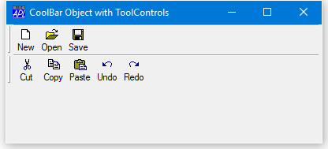
The user may move band 2 into row 1 by dragging the gripper bar:
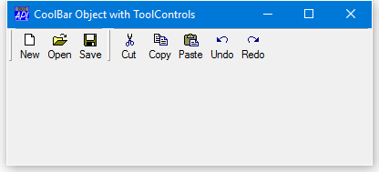
CoolBar: FixedOrder Property
FixedOrder is a property of the CoolBar and specifies whether or not the CoolBar displays CoolBands in the same order. If FixedOrder is 1, the user may move bands which have gripper bars to different rows, but the band order is static. The default is 0.
CoolBand: GripperMode Property
GripperMode is a property of a CoolBand and specifies whether or not the CoolBand has a gripper bar which is used to reposition and resize the CoolBand within its parent CoolBar. GripperMode is a character vector with the value 'Always' (the default), 'Never' or 'Auto'. If GripperMode is 'Always', the CoolBand displays a gripper bar even if it is the only CoolBand in the CoolBar. If GripperMode is 'Never', the CoolBand does not have a gripper bar and may not be directly repositioned or resized by the user. If GripperMode is 'Auto', the CoolBand displays a gripper bar only if there are other CoolBands in the same CoolBar.
The next picture shows the second CoolBand maximised.
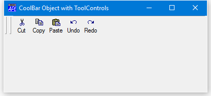
CoolBar: DblClickToggle Property
If it has a gripper bar, the user may maximise one of the bands in a row, causing the other bands to be minimised. The action required to do this is defined by the DblClickToggle property which is a property of the CoolBar.
If DblClickToggle is 0 (the default), the user must single-click the gripper bar. If DblClickToggle is 1, the user must double-click the gripper bar. These actions toggle a child CoolBand between its maximised and minimised state. The following picture shows the first CoolBand maximised.
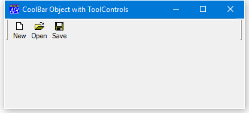
CoolBar: VariableHeight/BandBorders Properties
These two properties affect the appearance of the CoolBar.
The VariableHeight property specifies whether or not the CoolBar displays bands in different rows at the minimum required height (the default), or all the same height.
The BandBorders property specifies whether or not narrow lines are drawn to separate adjacent bands. The default is 0 (no lines).
The following example uses simple controls (as opposed to container controls) as children of the CoolBands and illustrate the effect of these properties on the appearance of the CoolBar.
'F'⎕WC'Form' 'CoolBar Object with simple controls'
'F.CB'⎕WC'CoolBar'
:With F.CB.C1'⎕WC'CoolBand'
'E1'⎕WC'Edit' 'Edit1'
:EndWith
:With 'F.CB.C2'⎕WC'CoolBand'
'C1'⎕WC'Combo'('One' 'Two' 'Three')('SelItems' 0 1 0)
:EndWith
:With 'F.CB.C3'⎕WC'CoolBand'
'E2'⎕WC'Edit'(3 5⍴'Edit2')('Style' 'Multi')
:EndWith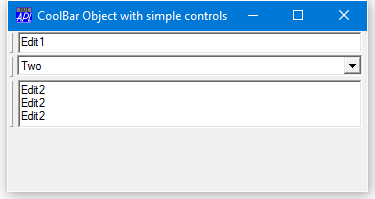
If the CoolBands are arranged in the same row, the height of the row expands to accommodate the largest one as shown below.
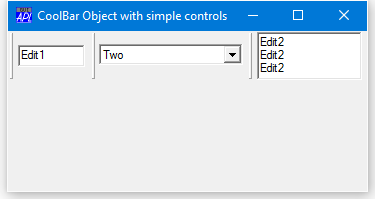
The picture below illustrates the effect of setting VariableHeight to 0.
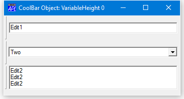
The picture below shows the effect on appearance of setting BandBorders to 1.
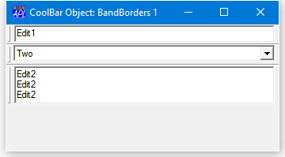
CoolBand: ChildEdge Property
ChildEdge is a property of a CoolBand and specifies whether or not the CoolBand leaves space above and below the object that it contains.
If the ChildEdge property of each CoolBand had been set to 1 in the above example, then the result would show wider borders between each band.
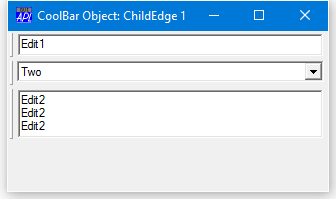
CoolBand: Caption and ImageIndex Properties
The Caption and ImageIndex properties of a CoolBand are used to display an optional text string and picture in the CoolBand.
The picture is defined by an image in an ImageList object whose name is referenced by the ImageListObj property of the parent CoolBar. The following example illustrates how this is done.
'F'⎕WC'Form' 'CoolBand Caption and ImageIndex'
'F.IL'⎕WC'ImageList'('Masked' 0)('MapCols' 1)
'F.IL.'⎕WC'Bitmap'('ComCtl32' 120)⍝ STD_SMALL
'F.CB'⎕WC'CoolBar'('ImageListObj' 'F.CB.IL')
'F.CB.IL'⎕WC'ImageList'('Masked' 1)('MapCols' 1)
'F.CB.IL.'⎕WC'Icon'('' 'aplicon')
'F.CB.IL.'⎕WC'Icon'('' 'editicon')
:With 'F.CB.C1'⎕WC'CoolBand' 'File'('ImageIndex' 1)
'TB'⎕WC'ToolControl'('ImageListObj' '#.F.IL')('Divider' 0)
'TB.B1'⎕WC'ToolButton' 'New'('ImageIndex' 7)
'TB.B2'⎕WC'ToolButton' 'Open'('ImageIndex' 8)
'TB.B3'⎕WC'ToolButton' 'Save'('ImageIndex' 9)
:EndWith
:With 'F.CB.C2'⎕WC'CoolBand' 'Edit'('ImageIndex' 2)
'TB'⎕WC'ToolControl'('ImageListObj' '#.F.IL')('Divider' 0)
'TB.B1'⎕WC'ToolButton' 'Cut'('ImageIndex' 1)
'TB.B2'⎕WC'ToolButton' 'Copy'('ImageIndex' 2)
'TB.B3'⎕WC'ToolButton' 'Paste'('ImageIndex' 3)
'TB.B4'⎕WC'ToolButton' 'Undo'('ImageIndex' 4)
'TB.B5'⎕WC'ToolButton' 'Redo'('ImageIndex' 5)
:EndWith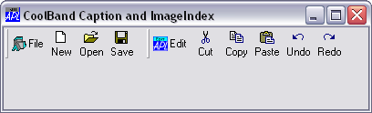
The Caption and image are displayed when the CoolBand is minimised as shown below:
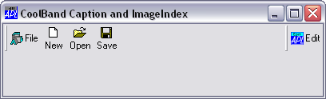
CoolBand: Size, Posn, NewLine, Index Properties
The Size property of a CoolBand is partially read-only and may only be used to specify its width; because the height of a CoolBand is determined by its contents. Furthermore, the Size property may only be specified when the CoolBand is created using ⎕WC.
The position of a Cool Band within a CoolBar is determined by its Index and NewLine properties, and by the position and size of preceding CoolBand objects in the same CoolBar. The Posn property is read-only.
The Index property specifies the position of a CoolBand within its parent CoolBar, relative to other CoolBands and is ⎕IO dependent. Initially, the value of Index is determined by the order in which the CoolBands are created. You may re-order the CoolBands within a CoolBar by changing its Index property with ⎕WS.
The NewLine property specifies whether or not the CoolBand occupies the same row as an existing CoolBand, or is displayed on a new line within its CoolBar parent.
The value of NewLine in the first CoolBand in a CoolBar is always ⎕IO, even if you specify it to be 0. You may move a CoolBand to the previous or next row by changing its NewLine property (using ⎕WS) from 1 to 0, or from 0 to 1 respectively.
If you wish to remember the user's chosen layout when your application terminates, you must store the values of Index, Size and NewLine for each of the CoolBands. When your application is next started, you must re-create the CoolBands with the same values of these properties.
CoolBands with SubForms
The CoolBand object itself may contain only a single child object. However, if that child is a SubForm containing other objects, the CoolBand can appear to manage a group of objects. A similar effect can be obtained using a ToolBar or ToolControl.
The following example illustrates this technique. The SubForms are disguised by setting their EdgeStyle and BCol properties. In addition, their AutoConf properties are set to 0 to prevent resizing of the child controls when the CoolBands are resized.
'F'⎕WC'Form' 'CoolBar with SubForms'('Size' 25 50)
'F'⎕WS'Coord' 'Pixel'
'F.CB'⎕WC'CoolBar'
:With 'F.CB.C1'⎕WC'CoolBand'
'S'⎕WC'SubForm'('Size' 30 ⍬)('EdgeStyle' 'Default')
('BCol' ¯16)('AutoConf' 0)
'S.E1'⎕WC'Edit' 'Edit 1'(2 2)(⍬ 60)
'S.C1'⎕WC'Combo'('One' 'Two')''(2 70)(⍬ 60)
:EndWith
:With 'F.CB.C2'⎕WC'CoolBand'
'S'⎕WC'SubForm'('Size' 30 ⍬)('EdgeStyle' 'Default')
('BCol' ¯16)('AutoConf' 0)
'S.E1'⎕WC'Edit' 'Edit 2'(2 2)(⍬ 60)
'S.C1'⎕WC'Combo'('One' 'Two')''(2 70)(⍬ 60)
:EndWith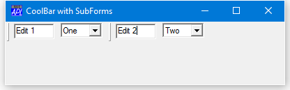